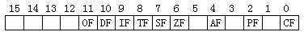

上一节的程序中我们用堆栈来保存CX寄存器的拷贝，这并非是唯一的解决办法。就"保存CX寄存器副本"这一问题而言，很容易想到可以用一个未使用的寄存器来保存CX寄存器中的计数值。程序PROG2－A中应用了BX寄存器（当然也可应用DX或其它寄存器）。有一点要注意：段寄存器，SP寄存器不可作为暂存数据用。
这里需要插入一点有关"寻址方式"的讨论。很多专业教材都谈到了这个问题。所谓寻址方式，就是CPU"寻找"被处理数据的方法。例如在指令"MOV CX，500"中，500H是一个"立即数"，它最终将出现在指令编译后的机器码中。CPU在取指令的同时就已经取到了数据。这样的寻址方式称为立即数寻址。
而在指令"MOV CX，BX"中，BX是一个寄存器，CPU在取指令时只是取到了表示"BX"寄存器编码，而实际所需的数据并未取到，只有在指令执行完后，BX中的数据才会进入CX。这样的寻址方式就称为"寄存器寻址"。当然还有其它的寻址方式，在本书的后文中会逐渐谈到。
关于PROG2我们还有别的改进方法。PROG2中的两个循环都用LOOP指令完成，都要用CX计数，这是造成"冲突"的根源。若我们不用LOOP指令而改用其它指令来完成"活"循环，那么这种冲突就不存在了。程序PROG2－B就是采用了这种思想。
PROG2－A -a100[Enter] 0B01:0100 MOV CX,0800 0B01:0103 MOV BX,CX 0B01:0105 IN AL,61 0B01:0107 XOR AL,02 0B01:0109 OUT 61,AL 0B01:010B MOV CX,0500 0B01:010E LOOP 010E 0B01:0110 MOV CX,BX 0B01:0112 LOOP 0103 0B01:0114 RET
在讨论新增的指令前，我们先看看LOOP指令的动作流程，图2－3反映了CPU执行LOOP指令的过程。注意CX寄存器先减1，而后判断是否减至0。这两个步骤是CPU自动完成的。
由此我们可以设想把某个循环的计数值放在除CX外的其它寄存器中，在执行循环时我们用"专门的指令"来把计数值减1，再用"专门的指令"判断减1的结果来控制转移，即可避免两个LOOP间的冲突。这就要用到PROG2－B中新增的两条指令DEC和JNZ。
PROG2－B -a100 0B01:0100 mov bx,800 0B01:0103 in al,61 0B01:0105 xor al,2 0B01:0107 out 61,al 0B01:0109 mov cx,500 0B01:010C loop 10c 0B01:010E dec bx 0B01:010F jnz 103 0B01:0111 int 20 0B01:0112
助记符：DEC（Decrement）
用 途：将指定的寄存器或内存单元中的数据的值减去1
格 式：DEC 寄存器（8bit或16bit）
DEC 内存单元
执 行：原数据减1，结果仍保存于这个寄存器或内存单元中
这条指令和C语言的那个"－－"运算符一样。由于所有段寄存器都不参与运算，所以没有"DEC DS"这样的用法。
在程序PROG2－B中我们一开始用BX来保存外循环的计数值，在内循环执行完后，我们用"DEC BX"使得BX中的计数值减1。下面的问题就是看BX是否被减成0。这由新增的JNZ指令完成。
助记符：JNZ（JUMP IF NOT ZERO）
用 途：根据运算结果是否非0来控制转移
格 式：JNZ 目的地址
执 行：若ZF＝0，则转移至目的地址执行指令；若ZF＝1，则继续执行下面的指令
新的问题出现了，ZF是什么？是新的寄存器吗？
这个问题不会再留到后面讨论了，因为它本身就是个遗留下来的问题。请看第一节内"细看PC机"中的2.2.5，在前文我们刚刚讨论了堆栈指针（SP）寄存器，还留了3个小问题，现在我们就来讨论"标志寄存器"。
对于一般数学运算我们不仅要关心运算的结果，同时要关心"运算后果"。以"DEC BX"为例，若BX〉1，则执行一次DEC指令不会使BX减为0，即运算没有造成变量变成0的"后果"；若BX＝1，则执行一次DEC即可造成"BX＝0"的后果。因此对于DEC指令而言，它可以造成两种不同的后果：
（1）被减的变量仍大于0； （2）被减的变量恰好成了0。
我们所编的程序并不关心"DEC BX"的结果是什么，但是要关心"DEC BX"的后果。因为BX被减至0实际意味着外循环的结束。那么运算的后果记录在什么地方呢？
在CPU中有一个特殊的16bit寄存器，此寄存器称为"标志寄存器（FLAG Register）"。和通用寄存器、段寄存器不同，它并不用于保存数据，CPU用它某些位的0，1状态来记录运算的后果。它的结构如图2－7所示。

所用到的各个位的解释都列在表2－1中，其中的ZF位就是我们现在所关心的。ZF被称为"零标志位"（Zero Flag），当某次运算的结果恰好是0时，ZF将被"置位（SET）"，即ZF＝1；否则ZF"复位（RESET）"。JNZ指令根据ZF的状态来转移。
| 标志位 | 功 能 解 释 | 清0 | 置1 |
| CF | 进位（借位）标志，某次运算有进位或借位时此标志置1 | NC | CY |
| PF | 奇偶标志，若运算结果中为1的位有偶数个此标志置1 | PE | PO |
| AF | 辅助进位标志*，记录运算中低4位向高4位或低8位向高8位的进位 | AC | NA |
| ZF | 零标志，若运算结果等于0此标志置1 | ZR | NZ |
| SF | 符号标志，运算结果为负数此标志置1 | NG | PL |
| TF | 陷井标志，当此标志位置1后CPU处于单步执行方式 | - | - |
| IF | 中断标志，此标志置1时允许CPU响应中断，置0时将屏蔽中断** | EI | DI |
| DF | 方向标志，用于控制串处理指令的步进方向 | DN | UP |
| OF | 溢出标志，若运算发生溢出时此标志置1 | OV | NV |
注：* 也称为半进位标志； ** 对不可屏蔽中断（NMI）没有影响
不难看出JNZ指令的转移与否也是有条件的，这样的转移指令被称为"条件转移指令"。在汇编语言中还有大量的条件转移指令，这些指令大部分都受到标志寄存器中某些位的控制。而且条件转移指令有很多都有"对立面"--转移条件恰好相反的指令。如与JNZ相对的指令：
助记符：JZ（JUMP IF ZERO）
用 途：根据运算结果是否为0来控制转移
格 式：JZ 目的地址
执 行：若ZF＝1则转移至目的地址执行指令；ZF＝0时继续执行下面的指令
这两条指令应用格式完全一致，而转移条件正相反。还有一点需要注意：条件转移指令只能在－128－＋127字节范围内进行跳转，即目的地址与转移指令后面一条指令的起始地址之差不能大于＋127或小于－128。这个性质很容易验证：输入命令A100[ ]，然后输入"JZ 182[Enter]"，DEBUG马上会显示"error"，这是因为182H－102H＝80H＝128〉＋127的缘故。同理，"JZ 81[Enter]"也会出错。
标志寄存器还有第二个用途，就是控制CPU内部的工作状态。这一点恰和端口的作用相对应，端口是对外部设备的工作状态进行控制。关于此种用途的实际应用将在后面介绍。
PROG2－B的结尾没有RET指令，但它却能正常的返回操作系统。这是那条"INT 20"指令作用的结果。
助记符：INT（INTERUPT）
用 途：调用中断服务程序
格 式：INT nn
执 行：CPU暂时停止执行当前的程序，根据nn的值去执行另一段程序，这段程序完成一个特定的工作，此程序执行完后，CPU自动返回原来的程序，从停下的地方继续执行。
INT 20的作用是命令CPU去执行操作系统提供的20H号中断服务程序，这段程序可以使机器重新控制在DOS手中。因此，执行过"INT 20"后，CPU将不在回到PROG2－B。
RET是一条指令，而INT 20的实质是执行一段程序，两者所完成的工作却完全一样，这又是什么原因呢？难道是RET指令的功能强大的可以和一段程序相比吗？这个问题引出了本书的第三章--中断调用与子程序。这一章会给出这个问题的答案。
这一章中说得最多的一句话就是"这个问题将在后面讨论"。确实，我们留下了很多问题。为什么要这样？笔者的目的有两个：
其一是为压缩内容。这一章所涉及的内容已经相当多了，需要大量的记忆。如果我们面面俱道，那并不利于读者很好地掌握重点内容；其二，笔者认为带着问题学习往往会有好的效果。当我们对一个问题"恍然大悟"的时候，我们对这个问题的理解和记忆就会更深刻。
请耐心地学下去。